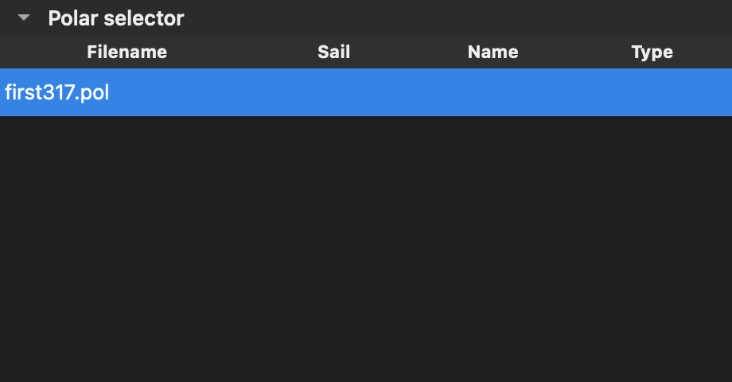

Polars and performance#
A polar describes how fast your boat should go at a given true wind speed and angle. Sailworks uses polars for routing and to compare predicted boat speed with the speed you actually measured.
Polar manager#
Click Polar manager in Polars or the routing wizard to open its component. It shares the sidebar and floating-window behavior of NMEA and Performance, and keeps its search, selection, and loaded catalog when hidden and reopened.
In Local polars, use Open polar… to import a .pol file, toggle its Enabled
checkbox, or select a file and click Remove. In ORC catalog, search by sail
number, boat name, or type, select a result, and click Download selected polar.
Already downloaded entries are disabled. Local polar lists and the routing wizard update
as changes happen; closing the component is not required to refresh them.
Polar selector#
Use Polar selector in the Polars toolbar to show or hide the polar list. The selector can dock alongside the other components or float in its own window. Selecting a row updates the chart and speed table immediately. Your selection survives hiding, floating, redocking, and polar-list updates; if the selected polar is removed or disabled, the first available polar is selected instead. The speed table remains beside the chart.


Performance#
In Polars, select a polar and open Performance from the toolbar. The controls live in a side panel: drag its tab or grip out to float it, or drag the floating panel to the right edge to dock it again. Closing the panel hides its controls while preserving samples, settings, live collection, and the plotted overlay. Reopen it using the toolbar button.
Predicted versus measured speed#
Enable Show actual performance in the panel. Solid curves show predicted boat speed; dots show measured speed at each true wind angle, preserving port and starboard tacks. Both use the same radial boat-speed scale. Dot colors match the nearest polar true-wind-speed curve, with band boundaries halfway between neighboring wind speeds. Measurements outside the polar’s wind-speed range are excluded. Use the wind-speed selector to isolate one band. Hover over a curve to immediately see its true wind speed and angle; other curves dim until you move away. Hover over a dot to inspect its measurements.
The comparison is a review aid. Measured dots can be higher or lower than the curves for many reasons: current, sea state, sail trim, wind shifts, instrument calibration, and an out-of-date polar all move the result. Do not treat a matching dot as proof that the polar or the instruments are correct.
Live connections#
Live connections collects valid instrument true-wind reports (MWV with reference T) paired with speed readings no more than five seconds old. Choose Speed through water for a direct performance comparison, or Speed over ground to include current effects. These sources are kept separate; a missing water speed is never replaced with GPS speed. Apparent wind is not converted into true wind for this overlay. Supported NMEA 2000 inputs use the instrument conversions described in Recording NMEA 2000 instruments.
Log library#
The Log library opens a saved interpreted NMEA log, including the primary file saved
from Logs. Select that file rather than its raw .n2k.log companion. These interpreted
logs have no receipt timestamps, so import pairs each wind report with speed within the
preceding 50 lines instead of applying a time limit. Logs without instrument true wind
or a usable speed reading produce no points. Loaded samples appear immediately; during
playback the overlay grows with the replay.
Sampling and limits#
Live collection retains the latest 20,000 samples in memory, with at most one sample per second per speed basis. Import retains the latest 20,000 samples without time resampling. Choosing Live data source in the NMEA panel connects or disconnects instruments; Clear samples in Performance clears the selected live/log history. The comparison uses the same samples when you select a different polar, so clear the history when changing boats or sail configurations. Save recordings through Logs to keep them across app restarts.